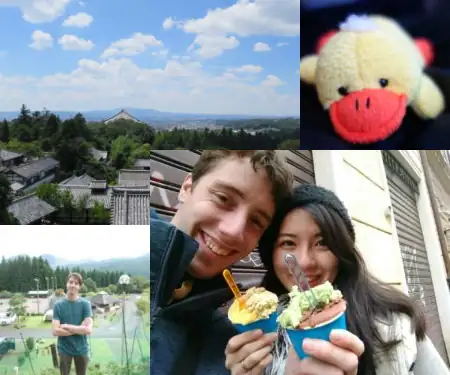

Voylin's Life
Hey guy's, my name is Voylin, I come from Belgium and I'm living in Japan with my family.
I started the youtube channel Voylin's Life to share my travel experiences and advice at first, however I became in love with Japan, and with someone in Japan, which made me change the focus of this channel to my life in Japan, things about Japan and helping others to learn Japanese.
I've been struggling a lot with Japanese ever since I started learning this language back in 2016 since it's such a hard language to learn. That's why I've been working on making video's to make learning Japanese more fun and more efficient.
And here is a short introduction which my wife (marshmallow) wrote down:
自己紹介/About Us
日本に住むベルギー人と日本人の夫婦です。普通の夫婦ですが、今まで大変だったことや面白かったこと、日々の暮らし等綴っていきます。また、同じような境遇にたった人が困った時に有益になるような私たちの経験も共有できればと思います。
We are a Belgian x Japanese couple living in Japan based in Osaka. and we would like to share how our life is for the people who are thinking to live in Japan or marry a Japanese.
My husband is Voylin and his youtube channel: Voylin's Life.
